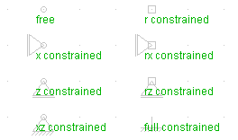

,
bzw. den entsprechenden Einträgen im Node-Menü werden neue Knoten eingefügt.
Dabei können die Auflagerbindungen gleich mit angegeben werden:
,
bzw. den entsprechenden Einträgen im Node-Menü werden neue Knoten eingefügt.
Dabei können die Auflagerbindungen gleich mit angegeben werden:
| zurück | Inhalt | vor |
Mit ,
bzw. den entsprechenden Einträgen im Node-Menü werden neue Knoten eingefügt.
Dabei können die Auflagerbindungen gleich mit angegeben werden:
| r | Drehfessel |
| x | Horizontales Auflager |
| z | Vertikales Auflager |
Die Auflagerbindungen können auch nachträglich im Properties-Dialog geändert werden. Ausserdem können dort die Koordinaten (X, Z), Knotenkräfte (Force X, Force Z, Moment) sowie das Label angegeben werden.
Das Label dient der Bezeichung des Objektes, und nur Objekte mit Label erscheinen in den Ergebnisdateien.
Bei Knoten, an die nur Truss-Elemente anschließen, muss in jedem Fall die Verdrehung (r) behindert werden, da das System sonst kinematisch ist.
Darstellung der Knoten:

| zurück | Inhalt | vor |